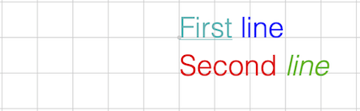
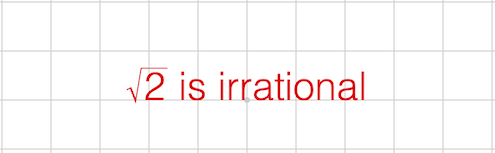

Text API Reference
Contents
OBJ_FormattedText
Extends OBJ_Collection
FormattedText options object that extends OBJ_Collection
options object (without parent).






Formatted text allows:
- Use of more than one font
- Multi-line text
- Embedded equations
- Interactivity on select strings
If text is defined as an array of strings of line definition objects, then
each element of the array will be a new line of text.
All text will be laid out with the default font (or default line font if a line definition object is used).
To modify the font of portions of text within a line, surround the text to
modify with '|' characters. The string surrounded by the '|' characters will
then be a unique identifier that can be referenced in the modifiers
property which will then allow for replacing that text with some other text,
changing the font of the text, changing the touchability of the text and/or
replacing the text with an embedded equation.
If a string is surrounded by '|' characters but not defined in modifiers
then that string will have the formmating of the accent property applied
to it.
Properties
touch property in OBJ_TextModifiersDefinitionmodifiersleft)font.size * 0.5)lineSpace for all lines including individual line settings (undefined)position (left)position (baseline)'draw')number and 'rect' use
the the points in 'buffer' to calculate the bounding rects ('buffer').Multi-line center justified
figure.add({
make: 'ftext',
text: ['First line', 'Second line'],
justify: 'center',
});
Modifiers
figure.add({
make: 'ftext',
text: ['|First| |line|', 'Second |line2|'],
modifiers: {
First: { font: { underline: 'true', color: [0, 0.7, 0.7, 1] } },
line: { font: { color: [0, 0, 1, 1] } },
line2: { text: 'line', font: { color: [0, 0.7, 0, 1], style: 'italic' } },
},
});
Interactive words in formatted text
figure.add({
make: 'ftext',
text: 'Touch |here| or |here2|',
modifiers: {
here: {
font: { underline: true, color: [0, 0, 1, 1] },
touch: 0.1,
onClick: () => console.log('here 1'),
},
here2: {
text: 'here',
font: { underline: true, color: [0, 0.8, 0, 1] },
touch: 0.1,
onClick: () => console.log('here 2'),
},
},
xAlign: 'center',
});
Embedded equation (inline form definition)
figure.add({
make: 'ftext',
text: '|root2| is irrational',
modifiers: {
root2: { eqn: { root: ['radical', '2'] } },
},
xAlign: 'center',
});
Embedded equation with defined, touchable elements
figure.add({
name: 't',
make: 'ftext',
text: ['A fraction is |fraction|', 'Touch it!'],
modifiers: {
fraction: {
eqn: {
scale: [{ frac: ['num', 'v', 'den'] }, 0.7],
},
offset: [0, 0.2],
touch: 0.1,
onClick: () => figure.get('t').pulse({
elements: ['num', 'den', 'v'],
centerOn: 'v',
xAlign: 'left',
scale: 1.3,
}),
space: 0.3,
},
},
elements: {
num: 'numerator',
den: { text: 'denominator', color: [0, 0, 1, 1], style: 'italic' },
v: { symbol: 'vinculum' },
},
xAlign: 'center',
});
To test examples, append them to the boilerplate
// Accent a word figure.add({ make: 'ftext', text: 'Hello |World|', });
FontManager
Font manager can be used to query if fonts are available, and watch to see when they load or time out.
Notifications - The notification manager property notifications will
publish the following events:
fontsLoaded: published when all fonts have been loaded or timed outfontLoaded: published after each font is loadedfontUnavailable: published when loading a font has timed out
OBJ_Font
Font definition object.
A font can be defined either from a subset of the properties used to define fonts in css, or by using a texture altas of the various glyphs to be used.
A font can be rendered into a 2D canvas or into the WebGL canvas using the texture atlas.
A texture atlas can either be supplied as an image, or generated automatically by FigureOne based on css font definitions.
Choosing how to render text depends on the application.
If text size is to be animated through a large scale range, then rendering on the 2D canvas is advantageous as it can scale text to any size without a loss of sharpness. The main disadvantage of the 2D canvas is the fact that it's a different HTML canvas element to the WebGL canvas. Thus all text on the 2D canvas will always be above (default) or below the WebGl canvas independent of when it is drawn. This means text will always be above or below shapes. regenerated each time the size changes by some threshold.
Conversely, drawing text on the WebGL canvas provides control on which shapes can hide text and vise versa. The disadvantage is that text is drawn from a texture atlas of bitmapped fonts. This means as text is progressively scaled up or down, the the text will look more pixelated or blurry. For many scalings (like common scalings in an equation), this will likely not be a problem. But for large changes in animated scale, it will be better to use the 2D canvas. Scaling also needs to be considered if the WebGL canvas is expected to be resized. On a desktop browser, a canvas element can be resized a lot, and so if using the WebGL atlas, it may need to be
Note, the choice of where to render text can be made for each text element. Therefore it is possible to have some text rendered to the 2D canvas, and other text rendered to the WebGL canvas in the same figure.
A texture atlas can either be supplied as an image, or generated automatically by FigureOne based on the css font definitions.
CSS font definition:
family- the typeface family from which it comes (e.g. 'Helvetica', 'Times New Roman')style- its slope (e.g. 'italic')weight- its thickness (e.g. 'bold')size
Atlas font definition:
src- the image or url to the image - if not supplied then atlas will be generated automaticallymap- description of location and size of each glyph in the atlasglyphs- the available glyphs in the atlas. To reduce the size of the atlas, include only the glyphs that are being used, or use a preset alphabet (like 'latin', or 'math')atlasColor- iftruethen the rendered glyph color will be the same as that in the texture. Iffalse, then only the transparency channel of the texture will be used and color will be defined by the FigureElement drawing the text.atlasSize- if defined, and if the glyphs are generated automatically then the glyphs will be created with a pixel size that isatlasSizeportion of the canvas height. If undefined, then the glyphs will be created with a pixel size that is the ratio of the font size to the scene height portion of the canvas height.
A font can also have a number of modifying properties:
color- fill or outline color of each glyph - not used if the texture atlas color is to be usedunderlineoutline- defines whether the font is filled, is an outline, or both
Fonts that are generated automatically rely on the client's browser to measure the font's width. From this the ascent and descent of each glyph is then estimated. Each glyph's width, ascent and descent is used to layout the glyphs in regular text and equations, as well as determine the borders and touch borders of FigureElements that draw the text.
However, this estimate for different font families is not always perfectly accurate. If the estimate is not sufficient, then it can be modified by using the following properties (where each property is a proportion of the width of a character 'a'):
maxAscent: Maximum ascent of glyphs like "A" or "$"midAscent: ascent of mid level glyphs like "a" and "g"descent: descent of glyphs that do not noticeably go below the baseline (but often do a little) like "a" and "b"midDescent: descent of glyphs that go a little below the baseline like "," and ";"maxDescent: maximum descent of glyphs like "g" and "|"
Individual glyphs can also be modified (for atlas based fonts only) using
the modifiers property.
Properties
'normal')true to include
an underline or use object to define its properties (false)[1, 0, 0, 1])false)null)true to use the color of the glyphs in
the atlas. false will just use the opacity and color the glyphs from the
FigureElement drawing themFull font definition
const font = new FigureFont({
family: 'Helvetica',
style: 'italic',
weight: 'bold',
color: [1, 1, 0, 1],
opacity: 1,
});
Define style only, remaining properties are defaults
const font = new FigureFont({
style: 'italic',
});